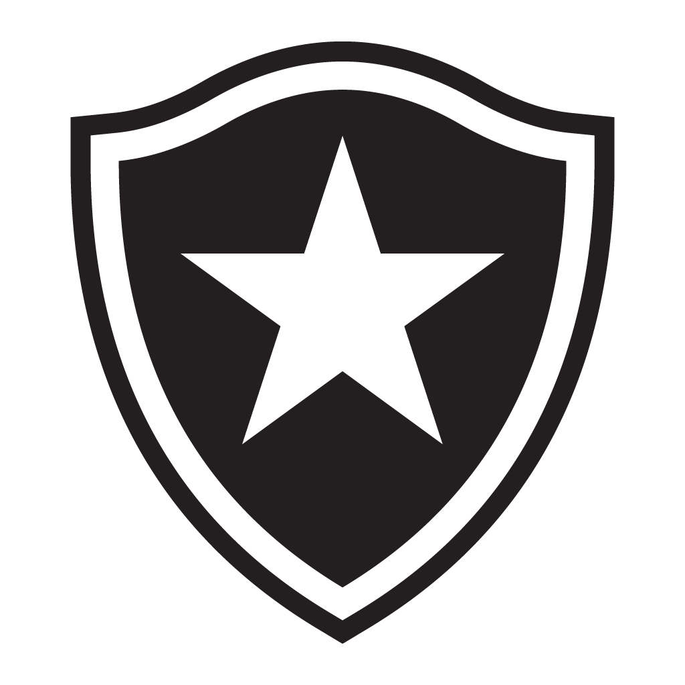

Corinthians
O Sport Club Corinthians Paulista, comumente referido como Corinthians, é um clube poliesportivo brasileiro da cidade de São Paulo, capital do estado de São Paulo.
Estádio: Neo Química Arena
Curiosidade: O mascote do Corinthians foi criado em 1929. A origem do nome vem do jornalista Thomaz Mazzoni, do impresso A Gazeta.
Posição: Primeiro Lugar

São Paulo
O São Paulo Futebol Clube, mais conhecido como São Paulo FC ou simplesmente São Paulo, é um clube poliesportivo brasileiro da cidade de São Paulo, capital do estado homônimo.
Estádio: Morumbi
Curiosidade: O Estádio Canindé, que hoje é da Portuguesa, foi a primeira casa do São Paulo Futebol Clube.
Posição: Segundo Lugar

Atlético-MG
O Atlético Mineiro Football Club foi fundado em 25 de março de 1908 por um grupo de estudantes de classe média em Belo Horizonte.
Estádio: Arena MRV
Curiosidade: Quase um ano após seu surgimento o Atlético disputou sua primeira partida oficial: em 21 de março de 1909 venceu o Sport Club Foot-Ball por 3x0.
Posição: Terceiro Lugar

Bota Fogo
O Bota Fogo surgiu com a junção de dois clubes de nomes semelhantes na região da Zona Sul do Rio de Janeiro
Estádio: Estádio Olímpico Nilton Santos